Avant : main après PR #13. Après : Mission 08. Même caméra, même éclairage du 21 juin 2026 à midi UTC, même profil et même viewport. Eau drapée sur le DEM : niveau non mesuré. Couronnes, litière et teintes procédurales. Captures diagnostiques, parfois hors des zones navigables ; elles ne représentent pas une promenade autorisée dans l’eau. SwiftShader logiciel.
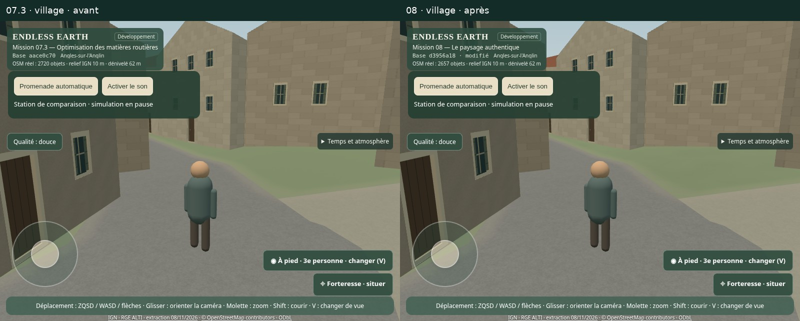
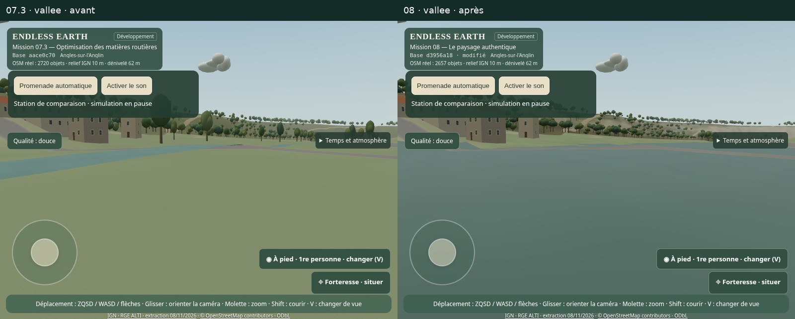
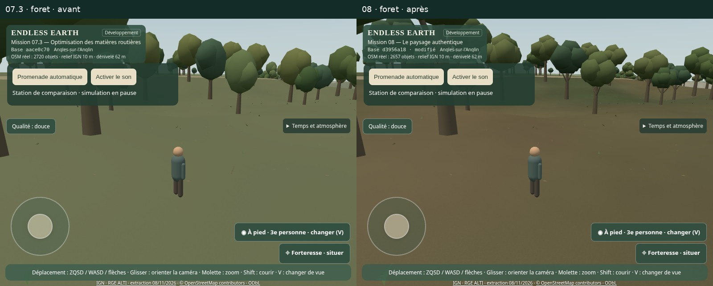
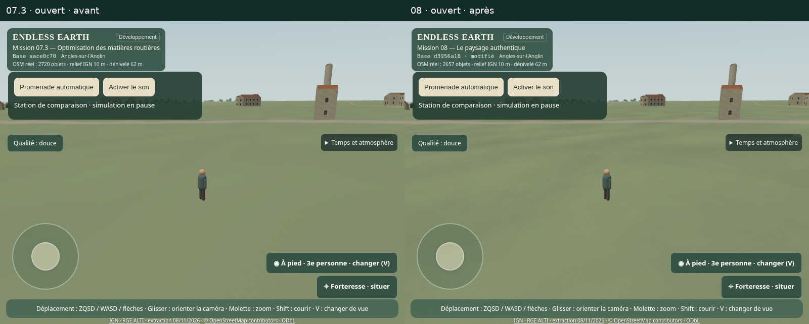
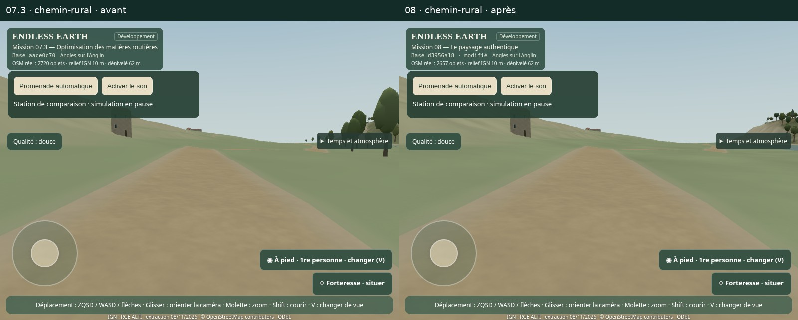
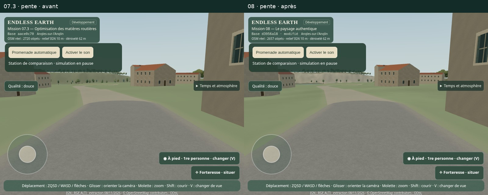
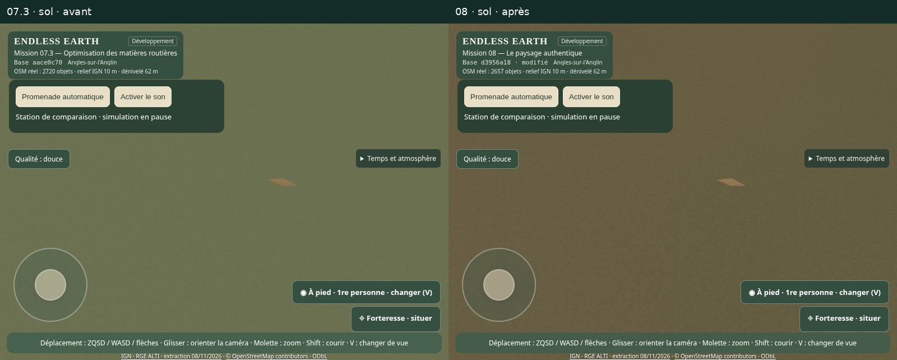
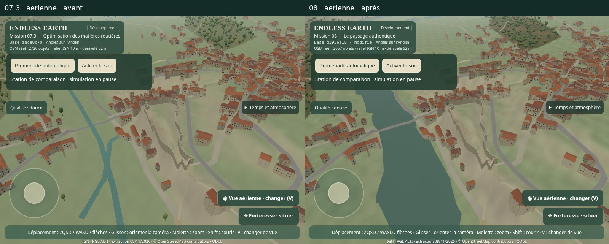
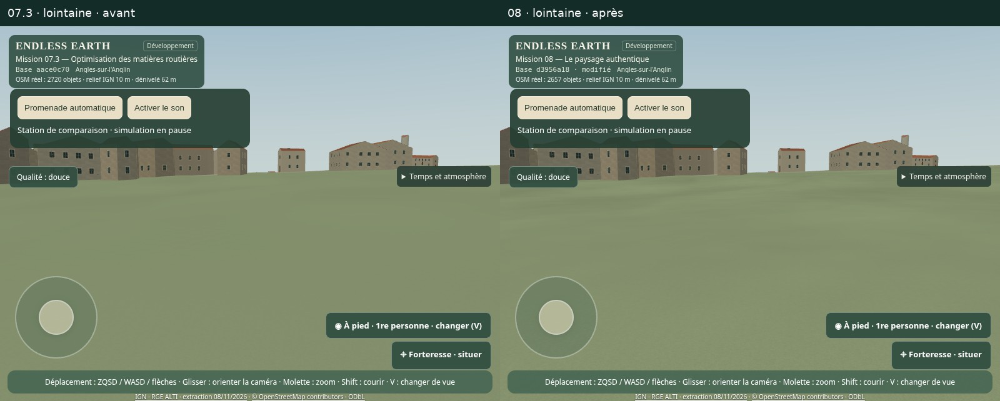
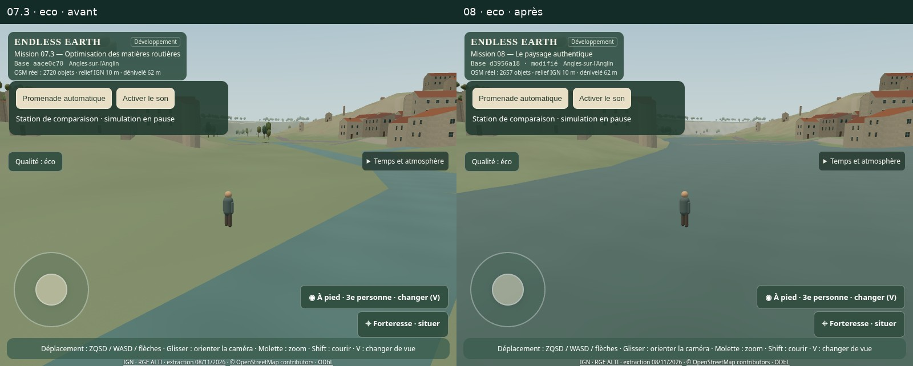
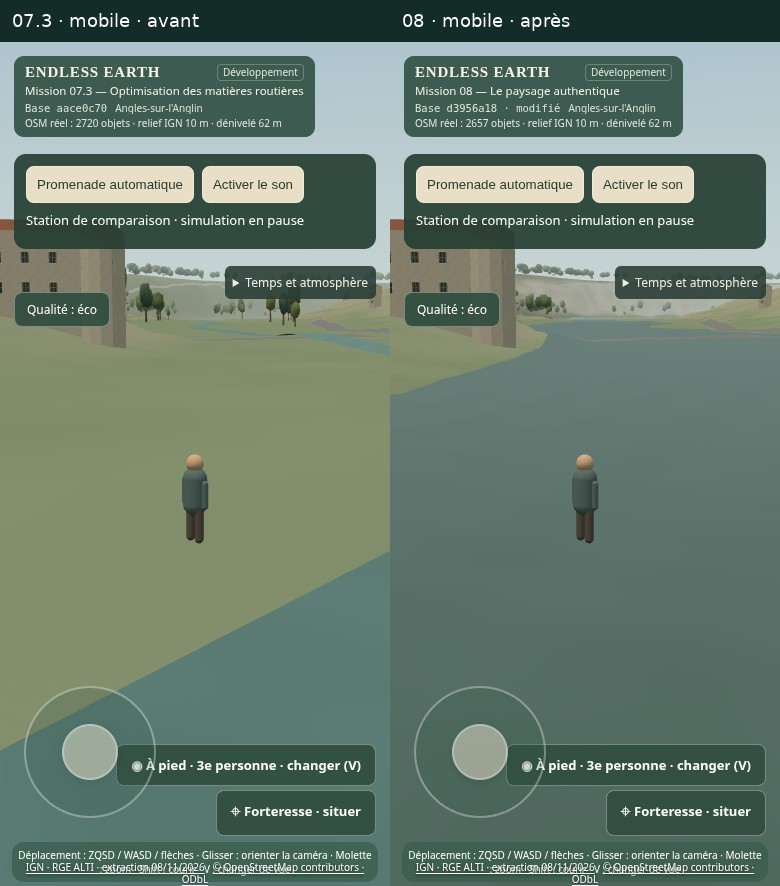
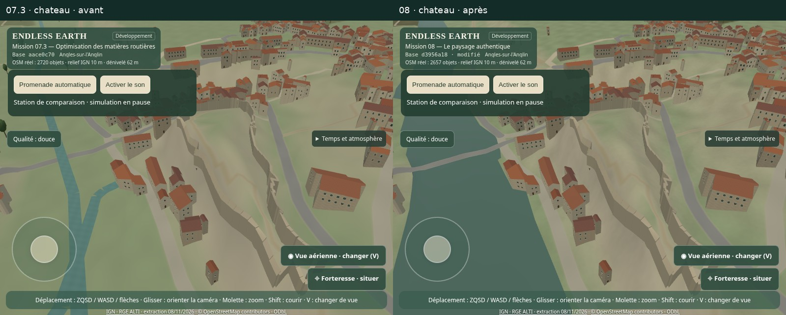
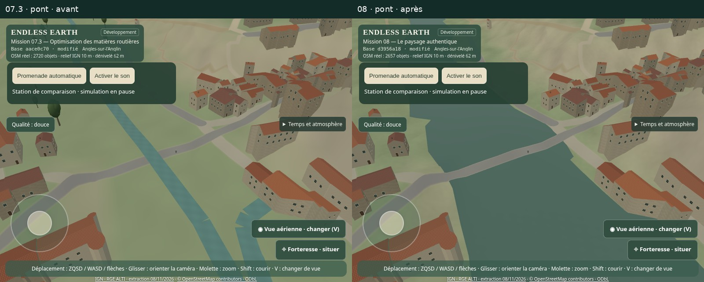
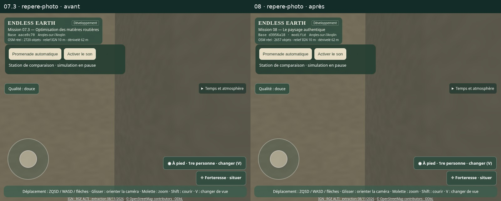